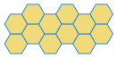

Movimientos en el plano
Un movimiento es una transformación que cambia la posición de una figura sin cambiar su forma ni su tamaño. La figura que se obtiene es igual (congruente) a la original.
Dibuja el cuadrilátero de vértices \(A(1,0)\), \(B(4,0)\), \(C(4,2)\) y \(D(2,3)\) y aplícale:
- Una traslación de vector \((-5,2)\).
- Una simetría de eje \(X\).
- Un giro de 90º con centro en el origen.
Mosaicos y frisos
Los movimientos aparecen continuamente en el arte y la arquitectura. Un friso es una banda decorativa formada al repetir un motivo con traslaciones en una dirección. Un mosaico cubre el plano sin dejar huecos ni superponer piezas. Los mosaicos de la Alhambra de Granada son un ejemplo famoso, y también los dibujos del artista neerlandés M. C. Escher.
Solo hay tres polígonos regulares que forman mosaicos por sí solos: el triángulo equilátero, el cuadrado y el hexágono regular, porque sus ángulos dividen exactamente a 360º.

Con GeoGebra, dibuja un polígono y usa las herramientas «Traslada objeto por un vector», «Rota alrededor de un punto» y «Refleja objeto en recta» para diseñar un friso.